Scene 1Warm-Up
▶ Start hereHow your Wonder Films lessons work1-minute videoOpen ▾
🎯 TodayI can…
- name three major threats to Florida's ecosystems.
- explain how each threat affects plants and animals.
- describe ways people are working to protect Florida ecosystems.

🔎 Mystery specimenWho is this spiny fish?
What to do: Press Inspect specimen. Move the magnifying lens over the fish, then tap 3 things you notice.

📚 Word WallWords scientists use
What to do: Tap or click each card to flip it and read what the word means.
Scene 2The Lesson
🌿 Part 1Florida's Wild Places Are Changing
Florida's ecosystems, like the Everglades, mangrove coasts, and dry scrub, are home to hundreds of kinds of plants and animals. But scientists are watching these places change. Some lakes are turning green. Some animals are losing their homes. Scientists study these places closely to find out what is causing the changes.
🎞️ Put the scenes in orderHow does fertilizer turn a lake green?
What to do: Drag each photo into the film strip, from first to last. You can also tap a photo, then tap a frame. Get the order right and your strip becomes a movie.
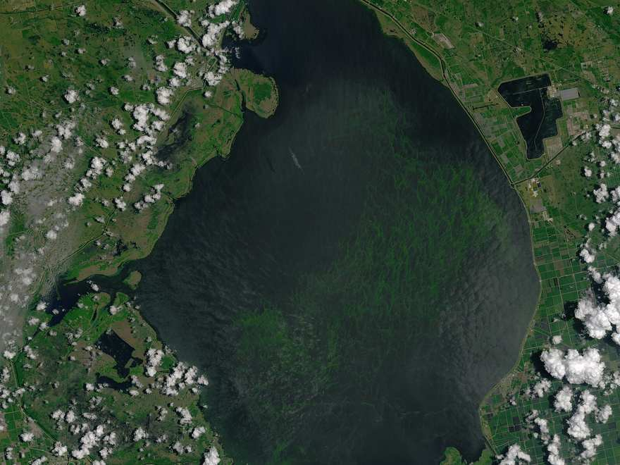
Ava says, "Pollution is only trash you can see, like bottles and bags." What do you think?
⚠️ Part 2Three Big Threats
Pollution: rain washes fertilizer off farms and lawns. This runoff makes algae grow out of control, blocking sunlight and using up oxygen fish need.
Invasive species: Burmese pythons came as pets, and some got loose. Now they spread and eat native animals.
Habitat loss: when a wetland is drained or a forest is cleared, the animals there have nowhere to go.
🧪 The Buffer TestWhich edge keeps the water clean?
What to do: Follow the steps one at a time. You will pick, test, and then explain.
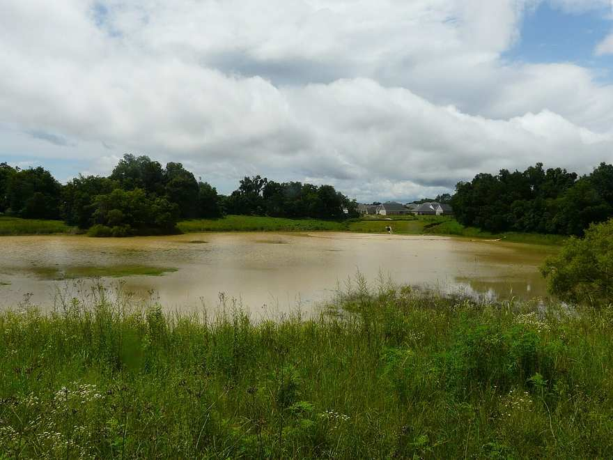
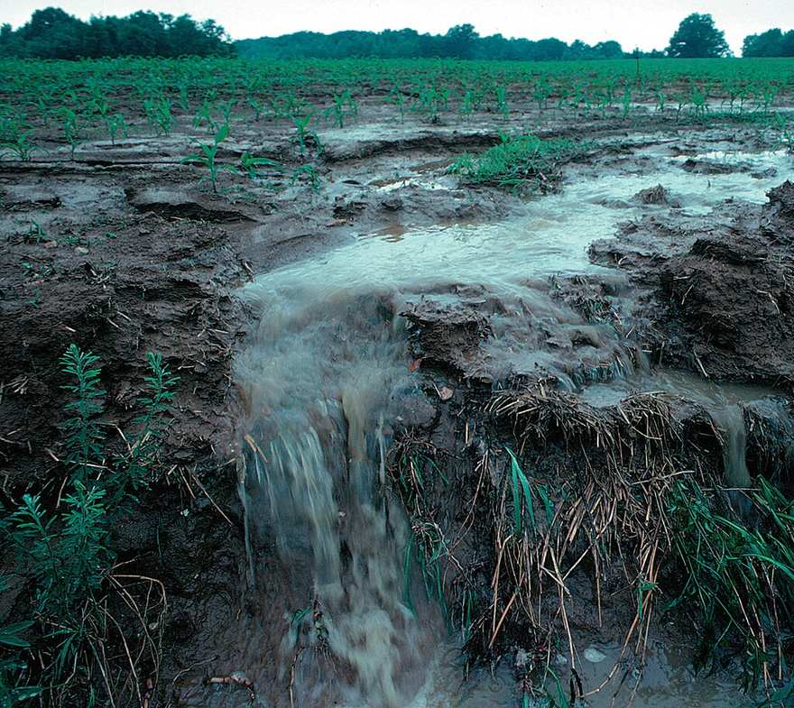
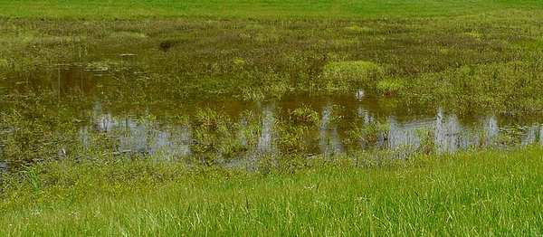
A strip of native plants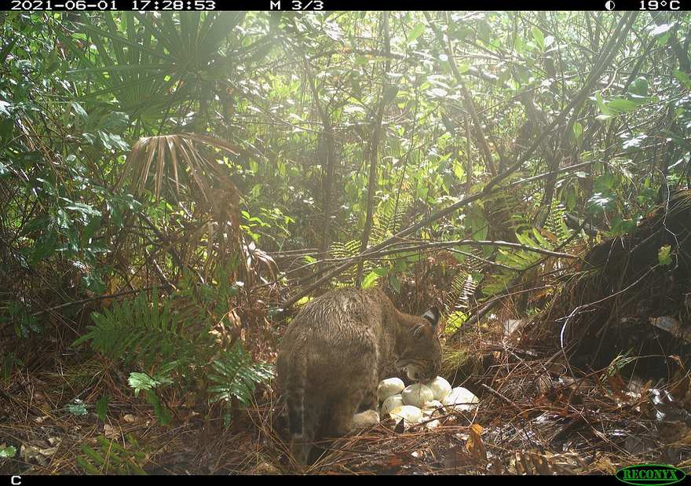
🔬 Part 3How Scientists Know, and How People Help
Scientists use evidence: observations and data. In places where pythons spread, they counted far fewer raccoons, opossums, and rabbits. Satellites show where algae covers a lake.
People are working on fixes. Engineers build filter marshes to clean water. Divers and trappers remove invaders. Parks and preserves protect wild land.
🗺️ The Threat MapTake a road trip across South Florida, one stop at a time
What to do: First, make a prediction. Then brush the glowing stop: drag across it (or tap it again and again) until the photo shows.
Do you predict every stop on the map shows people harming nature?
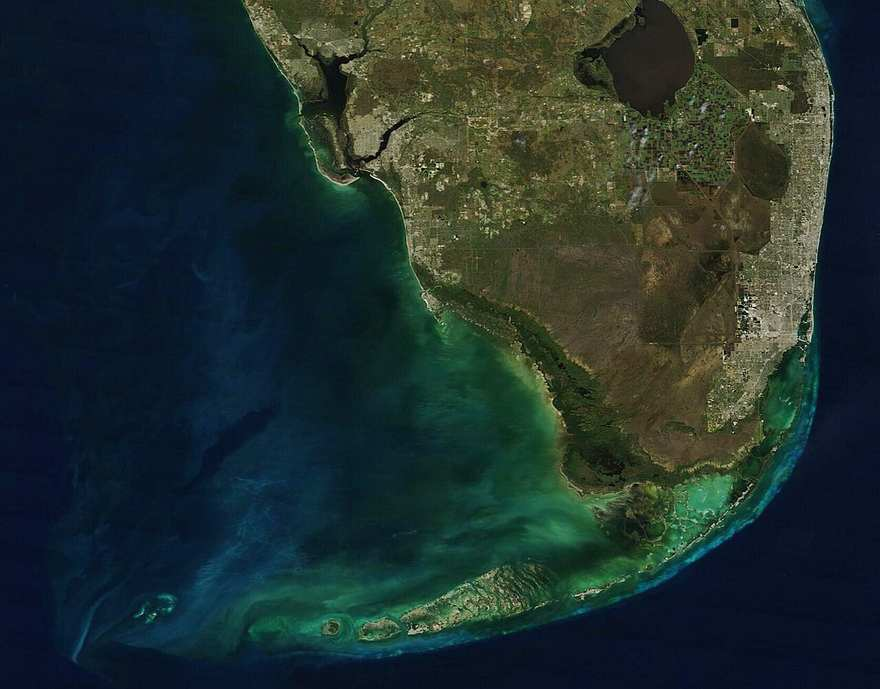
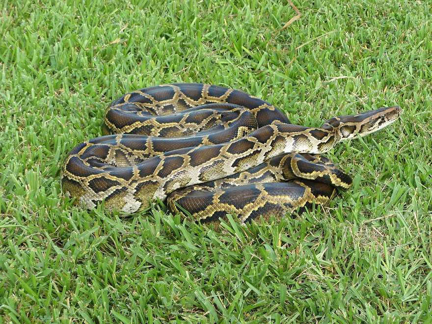
Stop 2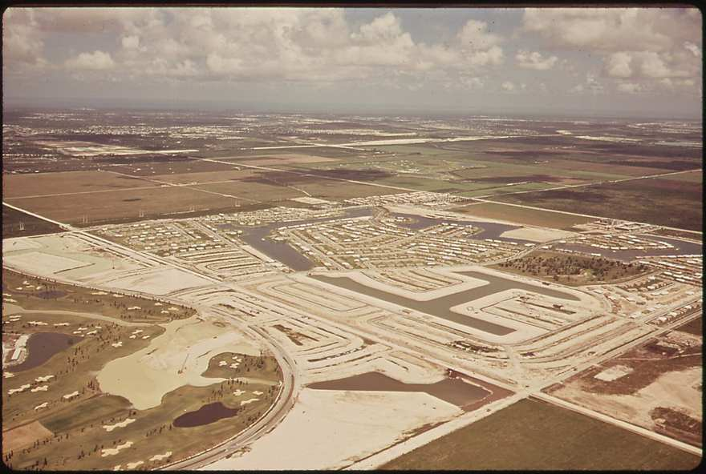
Stop 3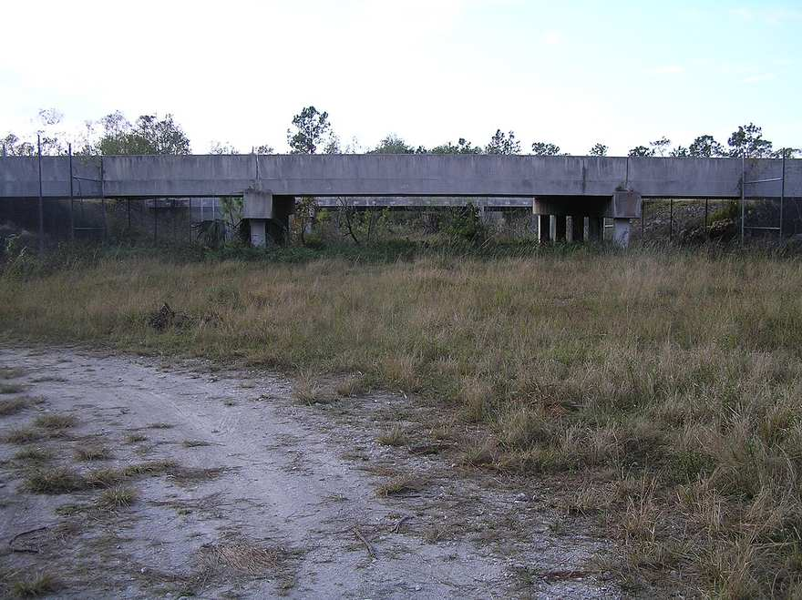
Stop 4Three big threats, one big job. Pollution, invasive species, and habitat loss all harm Florida's ecosystems. Conservation is the work people do to protect and restore them.
Kai says, "People are always harmful to ecosystems." What do you think?
Fixing the River of Grass
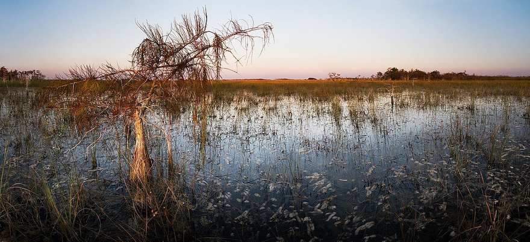
Long ago, people dug canals to drain water from the Everglades for farms and cities. Today, engineers are working to send clean water back.
It is one of the biggest repair jobs on Earth, and it will take many years. Nature doesn't heal overnight.
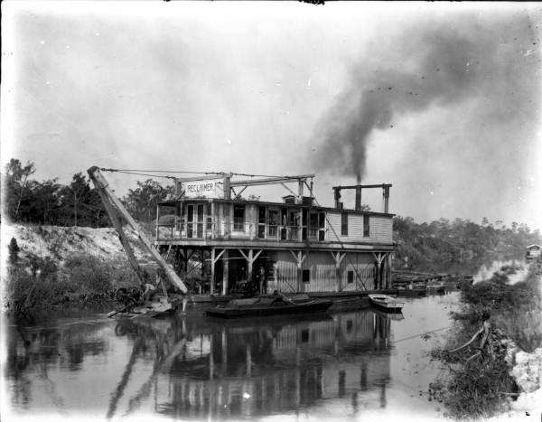
🕵️ Part 4Threat Files
What to do: Pick 3 cards, one at a time. Tap the clue that shows the problem, then name the threat. Predict what could help, and see how people are fixing it.
| Card | My evidence | Threat | How people help | My explanation |
|---|
🛠️ Match the fixUse your evidence to match each threat to a fix OPTIONALOpen ▾
What to do: Pick one you solved. Pick the group it belongs in, then tap the other ones that belong in the same group.
Pick one from your chart and explain it.
Start with: "Card __ shows…"
Scene 3Self-Check
What is an invasive species?
What most likely happens when too much fertilizer washes into a Florida lake?
Which of these is an example of habitat loss?
Scene 4Assignment
🔍 Part AMatch the threat
What to do: Read each one. Pick the type of threat.
1. Farm fertilizer washes into a Florida lake during a rainstorm.
2. A Burmese python spreads through the Everglades, eating native mammals.
3. A forest near Tampa is cleared to build a housing development.
4. Lionfish from the Pacific Ocean spread across Florida's reefs.
5. A highway is built through the middle of panther land.
🚀 Part BShort answer
What to do: Answer in complete sentences. Use your science words.
1. Explain how runoff can harm a Florida ecosystem. Use the word pollution in your answer.
2. Why is an invasive species dangerous even if it looks harmless at first?
✍️ Write and explainWhich of the three threats, pollution, invasive species, or habitat loss, do you think is the most serious danger to Florida's ecosystems?
What to do: Pick one from your evidence chart. Answer the three questions. Use at least one of the science words under the boxes.
Start with: "I think the most serious threat is…"
Start with: "I know this because the lesson showed…"
Start with: "This makes sense because…"
🎨 Part CDraw and label
What to do: Draw a Florida wetland ecosystem. Show one threat happening in your drawing. Label at least 4 things: at least one plant, one animal, and the source of the threat.
🎬 Your question from Scene 1Can you answer it now?
What do you still wonder about? Write your question here. Then answer it.
📋 My answersEverything you wrote, in one place
(Your answers show up here as you write.)
How to turn in: Copy your answers and paste them into the Canvas assignment. Or download the file and upload it. Then press Save my drawing in Part C and upload your drawing too.
✅ Checklist
What to do: Tap each item when it is done. Items you finish on the page check themselves.
- My evidence chart has 3 threat files and my explanation.
- Part A: all five matched.
- Part B: questions 1 and 2.
- Part C: my drawing and all my labels.
- Write and explain, with at least one science word.
🎬 Premiere my Florida threat reportYour exhibit
What to do: Check your exhibit. Pick the one you wrote about, add your first name, then press Premiere film.
I observed…
Its threat…
My evidence…
It tells us…
🎞️ This film's frames
Runoff day
The Buffer Test
The Threat Map
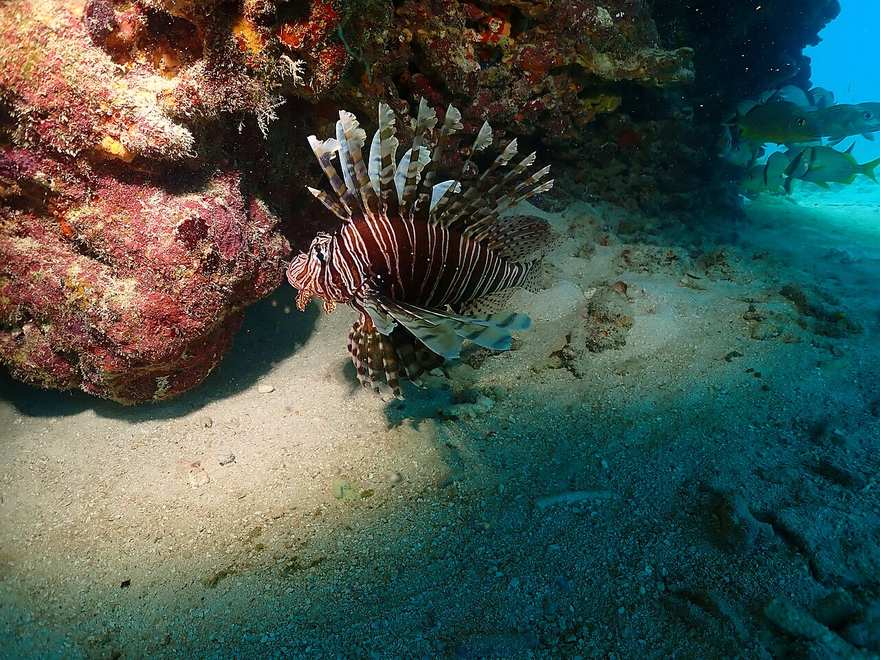
Threat files
Earn all four frames in the Lesson, then finish the checklist.
🔜 Coming up nextComing up next: 31.02
Engineering Challenge: Protect Florida Habitats. Next time, you're the engineer. Design a fix for one of Florida's habitat problems.
Photo and music credits
- Bobcat encounters python nest Photo 1-c, Andrea F Currylow, Fort Collins Science Center, U.S. Geologi, Public domain
- Iguana iguana on Sanibel Island, Grendelkhan, CC BY-SA 4.0
- Everglades canal, US Geological Survey, Public domain
- Cape Coral, Florida, David Wilson, CC BY 2.0
- Anhinga Trail (53558084704), evergladesnps, Public domain
- Panther Crossing - Next 6 Miles (30637501583), formulanone from Huntsville, United States, CC BY-SA 2.0
- Bear underpass écoducOurs, U.S. Dept. of Transportation, Public domain
- Enemy number one in the Florida Keys, the Lionfish - 53048769260, Symbiosis, CC BY 2.0
- FGBNMS lionfish removal (48771004952), National Marine Sanctuaries, Public domain
- Marsh Rabbit, Tomfriedel, CC BY 3.0
- SAGA DEVELOPMENT - NARA - 544540, Fred Ward, Public domain
- Panther Crossing, NPSPhoto, S.Zenner (9099875473), Everglades NPS from Homestead, Florida, United States, Public domain
- Great Egret in the Marsh (28e83693-1dd8-b71c-075e-01bf2d7de79d), NPS, Public domain
- Great Blue Heron (54309492243), evergladesnps, Public domain
- Newborn python, NPSPhoto (9247357403), Everglades NPS from Homestead, Florida, United States, Public domain
- A Burmese python coiled in the grass in the Everglades, Bryan Falk, USGS. Public domain., Public domain
- MAM raccoon 1590, NPSPhoto, Zobel, Jan 73 (9257895006), Everglades NPS from Homestead, Florida, United States, Public domain
- Everglades Canal lock, AnonymousUnknown author, Public domain
- Burmese python (6887388927), U.S. Fish and Wildlife Service Headquarters, Public domain
- KENDAL LAKES HOUSING DEVELOPMENT ENCROACHES ON THE EVERGLADES NATIONAL PARK -…, Fred Ward, Public domain
- Panther underpass, John D. Lloyd, CC BY 2.5
- New Light Church Road retention pond, The Bushranger, CC BY-SA 4.0
- Runoff of soil & fertilizer, Lynn Betts, photographer, Public domain
- Cropped lake okeechobee oli 2016184 lrg, NASA Earth Observatory images by Joshua Stevens, using Lands, Public domain
- Florida Algae Bloom 02, John Cassani, Public domain
- South Florida (MODIS), MODIS Land Rapid Response Team, NASA GSFC, Public domain
- Common lion fish Pterois volitans, Michael Gäbler, CC BY 3.0
- Everglades Stormwater Treatment Areas, September 20, 2014 (15836177632), USEPA Environmental-Protection-Agency, Public domain
- Canopy Oaks Community Park retention pond, The Bushranger, CC BY-SA 4.0
- River of Grass (1), NPSPhoto, Brian Call (9101714682), Everglades NPS from Homestead, Florida, United States, Public domain
- Music: Vltava (The Moldau), from Má vlast (Bedřich Smetana), Musopen, public domain recording (via Wikimedia Commons).
- Opti the owl: Optima Academy. Sound effects are made by the page. The runoff movie, the Buffer Test, and the Threat Map are models; every place photo is real. The raccoon count in the film comes from a 2012 study that counted animals on Everglades roads where pythons had spread.